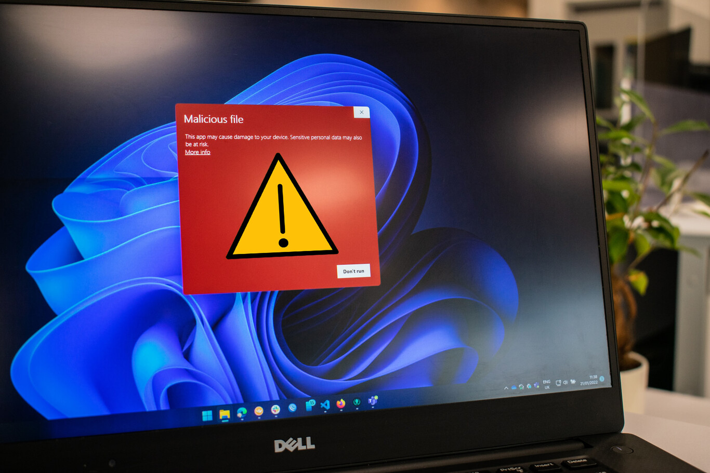

.png)
El mundo está contagiándose de la fiebre ChatGPT. Conversamos con este chatbot para que resuelva nuestras dudas y para que nos ayude a trabajar mejor,
pero mientras lo hacemos, le estamos contando un montón de cosas a este motor de inteligencia artificial conversacional. Eso no es problema si uno habla
de temas más o menos banales, pero la cosa cambia, y mucho, en empresas.
Top secret. Como indican en Dark Reading, un informe reciente de la consultora de seguridad de datos
Cyberhaven reveló que se detectaron y bloquearon peticiones de introducción de datos en el 4,2% de los 1,6 millones de
trabajadores de empresas que trabajan con ellos. Es un porcentaje que parece bajo pero que es realmente preocupante porque en todos
los casos el peligro estaba en que esos trabajadores acabaran filtrando datos sensibles.
El ransomware se está convirtiendo en una verdadera condena para multitud de empresas y entidades,
pero hay objetivos especialmente delicados. Los hospitales son un dramático ejemplo de lo que pueden provocar estos ciberataques, y
el Clínic de Barcelona está ahora mismo bajo mínimos debido a una reciente intrusión en sus sistemas.
Qué ha pasado. Ayer domingo, a las 11:17 horas, el Hospital Clínic de Barcelona notificaba a la Agencia de
Ciberseguridad de Cataluña que habían sufrido un ciberataque de ransomware. Eso provocó que los servicios de laboratorio,
farmacia y urgencias se cordinaron con otros hospitales de la ciudad para la atención de urgencias, transportes sanitarios y códigos urgentes (infarto, ictus, etc).
Funcionamiento parcial. En una actualización posterior, los responsables del CLínic indicaban que varios servicios se
mantienen activos, pero que se habían desprogramado cirugías selectivas, extracciones y consultas externas. Mientras, se sigue trabajando
"en recuperar el sistema informático".
De rescate, nada. Como indican en El Mundo, desde la Generalitat se ha indicado que de momento no hay petición de rescate,
pero se ha descartado cualquier "tipo de negociación para pagar ni un céntimo" por la recuperación del acceso y posibles datos robados.
Según la Agencia de Ciberseguridad de Cataluña, este ciberataque ha sido "sofisticado y complejo" y procede de fuera de España. En concreto,
de un grupo llamado Ransom House.
Las amenazas de seguridad informática han crecido notablemente en los últimos años,
poniendo en peligro los datos de usuarios particulares, empresariales y gubernamentales.
Este escenario ha reafirmado la idea de que no existe el software completamente seguro. Del mismo modo que se pueden utilizar
ciertas técnicas para abrir una cerradura física sin su llave, también es posible vulnerar la seguridad de los sistemas digitales.
Ahora bien, no todos los elementos que forman parte del ecosistema digital en el que estamos inmersos están expuestos al mismo nivel de riesgo.
En el mundo de los sistema operativos de escritorio, según AV-ATLAS, la diferencia es prominente. Windows, con mucha diferencia, se ubica a la cabeza de
la lista, seguido de macOS y Linux. Veamos detalladamente los resultados del informe para entenderlos mejor.
